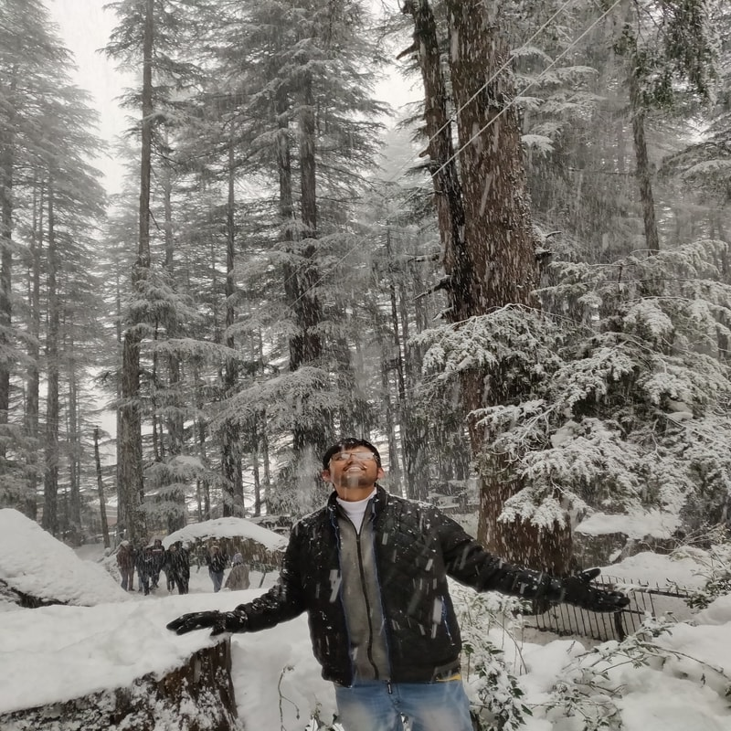

I am an IIT roorke alumnus currently working as a Big Data Engineer at Intuit. I am passionate about solving real world problems by building new algorithms. I have experience of working with Big data technologies and have also developed projects and done POCs using them. I am also familiar with software design principles and developed pipeline monitoring projects using them. I also have interest in competitive programming. I am well versed with advanced data structures and algorithms.

Skills
PROGRAMMING
C++
C
Python
Java
Scala
PHP
UTILITIES
Git
Sublime Text
Linux
Mac
Windows
AWS
Maven
Pycharm
Android Studio
Eclipse
DB Visualizer
Tidal Enterprise Scheduler
Jenkins
Spring Boot
Django
BIG DATA TOOLS AND DATA WAREHOUSES
Vertica
Hive
Spark
Splunk
Hadoop
Experience
Intuit
Software Engineer
Location : Bengaluru,India
Duration : Jul. 2019 - Present
Worked on reducing time complexity of long running queries from 1-2 hours to few minutes or even seconds. Built a Unified Monitoring Dashboard which greatly reduced burden of Data Engineering Team of keeping track of so many things from different sources. Built pipelines which ingested large scale data to Data Warehouse. Got special mention award for Data SLA Predictor.
CSAHealthBox Technologies Pvt. Ltd.
Backend Developer Intern (Remote Intern)
Location : Bengaluru,India
Duration : sep. 2018 - Dec. 2018
Implemented feedback classification using Naive Bayes algorithm to calculate sentiments. Built Rest API's and created stored procedures. Implemented Localization for the complete website in four languages - Tamil, Malayalam, Hindi and English.
Intuit
Software Developer Intern
Location : Bengaluru,India
Duration : May 2018 - Jul. 2018
Built a framework to bring Operational Excellence, in Mint data pipelines, with Automation using Alerts and Notification in form of PagerDuty mails, Outlook mails, etc. , and Dashboard for visualization using Splunk. Moved cron jobs from Rundeck to Tidal, figuring out dependencies between by going through sql files.
mBreath
Android Develoer Intern
Location : STEP IIT Kharagpur, West Bengal
Duration : May 2017 - Jul. 2017
Built an Android Application for vocally interacting with their product SleepDoc+ using Alexa Voice Service API, using Observer and Singleton Desgin Patterns. Developed a new Alexa skill for their product through Alexa Skill Kit using AWS lambda service. Developed a multiple Alarm system in the Android Application.
Open Source Contributions
Contributed to following open source projects. Learnt how to maintain a large codebase, coding standard, new technologies, etc.
These are some projects which I created by learning from various sources and wanted to share with the community.
Competitive Programming
C++
Codeforces
Codechef
Spoj
Hackerearth
Hackerrank
Quora
Blogs
Recently developed interest in competitive programming and wanted to share my learnings with the community. This project includes advanced data structure (such as Segment Tree, Heavy Light Decomposition, etc. ) questions/solutions and links of their blogs, and coding contests solutions.
Alexa-Voice-Service
Java
Amazon
Alexa-Voice-Service
Android
Software Design Patterns
Alarm
Android-Studio
Gradle
Intern
Developed this project as part of my intern-project in mBreath Technologies Pvt. Ltd. . Later I thought of sharing it with the community.
CustomCiruclarProgressBar
Java
Android
Android-Studio
Custom Views
Gradle
Developed this project with curiosity to learn how to create a custom view in Android.
HitTheMouse
Java
Android
Android-Studio
Canvas
Gradle
Game
Developed this game in curiosity of learning to draw on canvas and how we can build simple games with simple algorithms.
LenDen
Java
Android
Android-Studio
Gradle
Splitwise
Database
Developed this project as an effort of creating an application with same functionality as Splitwise. Also, learnt the fundamentals of a database while creating this application.
PlayMySong
Java
Android
Android-Studio
Gradle
APIs
Songs
It was my first Android tutorial application. Learnt working with APIs and various views of Android like list, navigation tab, etc.
Academic Projects
These are my academic projects.
Brain Tumor detection through MRI Images (BTech. Project)
Python
CNN
Image Processing
Computer Vision
U-NET Architecture
Keras
Built a model for detecting brain tumor from MRI scans. The model used U-net architecture based on Convolutional Neural Network. Our model was able to achieve comparable results and in some cases better results with other models winning the BraTS contests. Professor : DR. R. BALASUBRAMANIAN
Building detection on Satellite Images
Python
CNN
Image Processing
Computer Vision
U-NET Architecture
Tensorflow
Built a building detection model for very high resolution remote sensing data, based U-net Arch. of fully Convolutional Neural Network. Obtained an overall F-Score (Accuracy) of 0.52 on data set of 40 images. Professor : DR. BIPLAB BANERJEE
E-commerce Website - Classroom Shoppers
DBMS
Nodejs
MySQL
Normalisation
Built the optimal database design of e-commerce website using MySQL and connected it to the website using Nodejs in Express js Framework. Professor : PROF. RANITA BISWAS
Check Your Emotions
SDLC
Java
Android
Android-Studio
Microsoft Cognitive Services
Emotions
Developed an Android Application for detecting the emotions depicted by the image captured or selected from the mobile storage. The application suggest ways to improve that emotion. Used the Emotion API of Microsoft Cognitive Services. Professor : PROF. SANDEEP KUMAR GARG


 C++
C++ C
C Scala
Scala PHP
PHP Sublime Text
Sublime Text Linux
Linux AWS
AWS Pycharm
Pycharm Android Studio
Android Studio Eclipse
Eclipse DB Visualizer
DB Visualizer Tidal Enterprise Scheduler
Tidal Enterprise Scheduler Spring Boot
Spring Boot Django
Django Vertica
Vertica Hive
Hive Spark
Spark Splunk
Splunk Hadoop
Hadoop